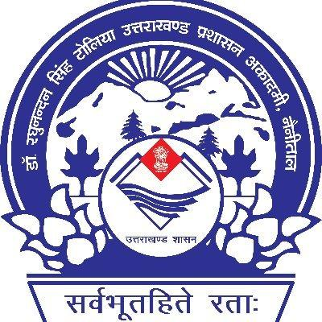

Ecosystem
Partners and Network
Organisations we work with, and the institutions our researchers and interns come from.
Programme partners
Working together on the ground

WaterAid IndiaWater security planning, Viega Project
Jal Seva Charitable FoundationImplementing partner, Lucknow

Dr. R. S. Tolia Uttarakhand Academy of AdministrationATI Nainital, ULB training
Our researchers and interns come from
Academic network
 Delhi Technological UniversityDelhi
Delhi Technological UniversityDelhi IIT RoorkeeUttarakhand
IIT RoorkeeUttarakhand Gurukula Kangri VishwavidyalayaHaridwar
Gurukula Kangri VishwavidyalayaHaridwar FUT MinnaNigeria
FUT MinnaNigeria VR Siddhartha Engineering CollegeVijayawada
VR Siddhartha Engineering CollegeVijayawadaWe also have links with IIT (BHU) Varanasi, UPES Dehradun and partner universities abroad, and honorary mentors who support international, co-authored publications.
Partner with us
Universities, NGOs, municipalities and industry: let us explore a collaboration.
Start a conversation